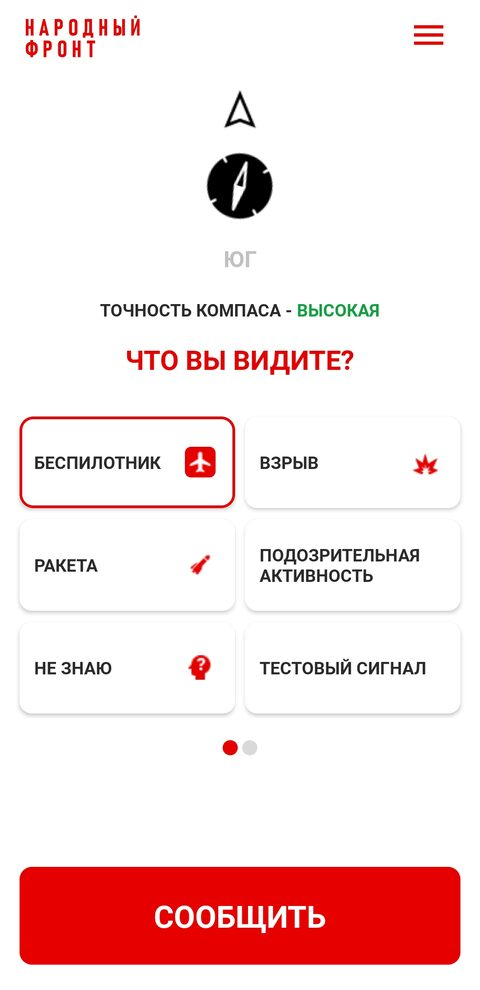
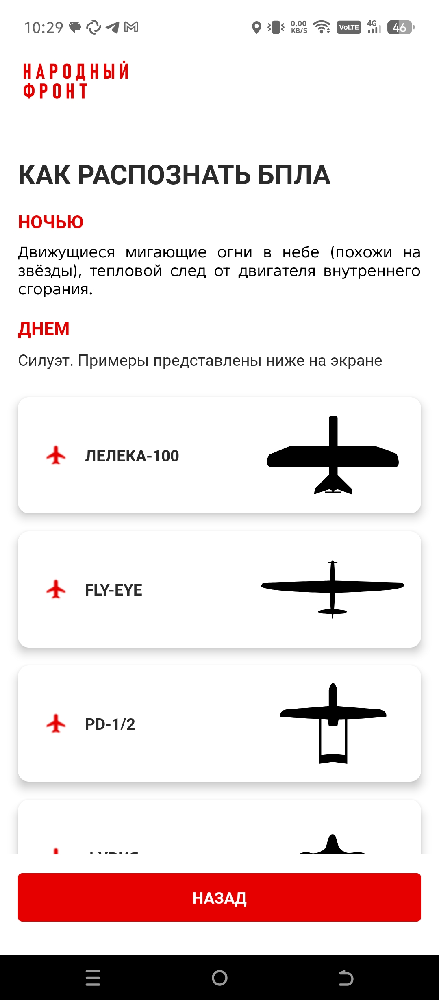
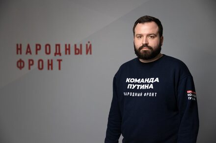
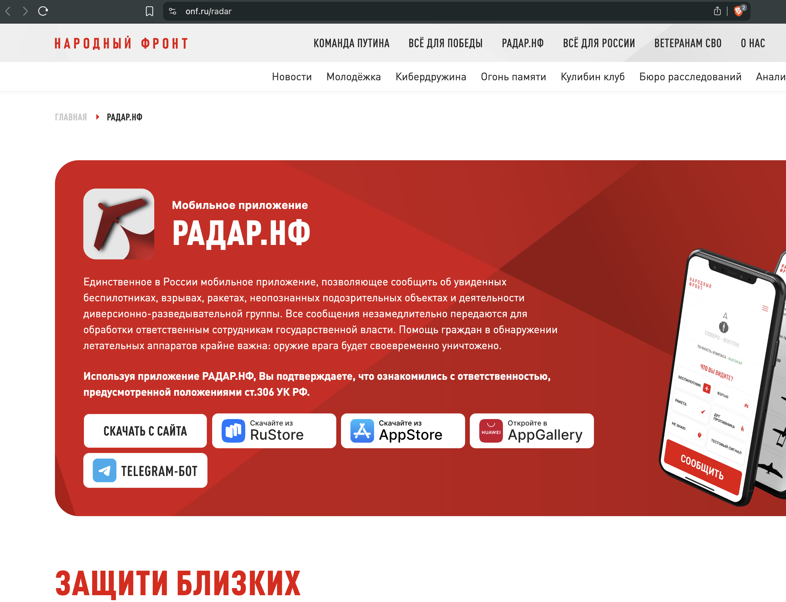

Единственное общенациональное приложение, через которое гражданин России может сообщить о вражеском БПЛА для его локализации и уничтожения, — заброшено. Его перестали продвигать: с ноября 2025 года нет ни одной публикации о развитии приложения. Сегодня никто публично не утверждает, что оно сейчас кого-то защищает.
После нескольких отправленных сообщений приложение перестало принимать новые — с 10:19 до 15:01 (30.06.2026), как минимум ~5 часов. Похоже, телефон поставили в блок на неопределённый срок: на каждое следующее «Сообщить» сервер отвечал «Превышено количество отчётов». В боевых условиях, когда счёт идёт на секунды, это критично.
Запущено в августе 2023 года Общероссийским народным фронтом (ОНФ). Это «придворный» проект: управленческая вертикаль выходит прямо в Администрацию президента.
Гражданин наводит телефон на дрон, выбирает тип, фотографирует и жмёт «Сообщить» — сигнал якобы идёт «ответственным сотрудникам госвласти».
Вторая, прямо декларируемая цель — объединение граждан и их соучастие: руководитель проекта в эфире называл целью «повышение сопричастности граждан, возрождение патриотизма», а в сюжетах звучало «объявляем мобилизацию смартфонов». Официальный сайт: onf.ru/radar
«Федеральное» — значит общенациональное, а не московское. Региональные аналоги (функция «Вижу БПЛА» в приложении «112 МО») привязаны к одной области и жителю Курска или Брянска бесполезны. Дрон на Москву летит через провинцию — поэтому инструмент обязан охватывать всю страну. Такой ровно один.
30 июня 2026 года приложение в произвольный момент дня отказывалось принимать сигнал. Подтверждено перехватом трафика (19 из 19 попыток отклонены) и записью экрана реального устройства в 15:01 — спустя ~5 часов после первых отказов в 10:19. Штатно отправить новый отчёт нам удалось лишь спустя сутки — только тогда блок снялся.
Блокировка срабатывает после нескольких (≈3) сообщений в адрес ОНФ. Наша позиция: несколько отчётов мы отправили (в т.ч. один с фотографией ~2,8 МБ, который не успели расшифровать), после чего наш телефон поставили в блок на неопределённый срок — на каждое следующее «Сообщить» приходит «Превышено количество отчётов». В реальной атаке дрон проходит ~2,5–3 км в минуту; пока приложение в блоке, цель уже улетела.
А снятое во время лимита фото отправить позже нельзя (из галереи приложить не даёт) — наблюдение теряется безвозвратно. Сервер не сообщает, когда лимит снимется. Отклоняется даже «тестовый сигнал».

кликните по экрануМы расшифровали обмен приложения с сервером (man-in-the-middle на собственном устройстве). Чувствительные поля вымараны редакцией. Ниже — три фрагмента «как есть».
PUT /api/create authorization: Bearer eyJhbGci██████████ x-client-version: 31 { "azimuth": ███, "coordinates": {"lat":██████, "lon":██████}, "type_id": 1, "is_test": false } ← 400 {"error":"Превышено количество отчётов","result":false}
rd.onf.ru → 91.215.41.███ (DDoS-Guard) issuer: GlobalSign AlphaSSL CA 2025 действует до 07.10.2026 вшито в клиент: AlphaSSL CA 2023 ✗ просрочен 13.09.2025 set-cookie: __ddg9_=95.139.██.███ ← реальный IP клиента
POST /api/v1.0/auth/login/by-code/sms { "login":"+7992██████", "code":"████" } ← OTP открыто scopes: phone, email, name, birthday, region, photo, password captcha: app.pomosch.onf.ru/captcha ?sitekey=████
Счётчик скачиваний накачивали весь 2025-й — но и он, похоже, встал: рост прекратился вместе с пиаром, последняя содержательная новость о приложении датируется ноябрём 2025. А сам клиент не развивается ещё дольше — с осени 2024.
Мы не голословны. Нажмите «раскрыть +» у любого тезиса — под ним развернётся техническое или документальное доказательство с указанием метода.

Программа учит пользователя распознавать модели «по силуэту». Но каталог содержит лишь 6 моделей разведывательного типа (ЛЕЛЕКА-100, FLY-EYE, PD-1/2, ФУРИЯ…) — это несоответствие угрозам 2026 года: у ВСУ 87+ моделей, включая ударные, FPV и дальнобойные, которых в каталоге нет вовсе.

РасхожденияРазбор интервью (эфир «Вечер Z» на smotrim.ru, 23 октября 2023 года) и публичных заявлений Михаила Камышева.
| Заявление | Что на самом деле |
|---|---|
| «Сигнал за секунду поступает, происходит реакция» | Отправка блокируется рейт-лимитом на часы (зафиксировано ~5 ч); «реакция» — мягкая атрибуция «помогли», не мгновенная. |
| «Любой житель в два клика сообщит» | Сначала регистрация по номеру, онбординг, настройка, ожидание GPS, капча и рейт-лимит. Не «два клика». |
| «После настройки можно даже выключить — она в боевом режиме» | Отзывы: «уведомления больше не приходят, стало бесполезным»; при глушении GPS — виснет. «Боевой режим» не подтверждается. |
| «Распространяем по всей территории, но больше всего — у линии фронта» (2024) | Позже сами заявляют: лидер по установкам — Москва и МО (446 тыс. — Коммерсантъ/ТАСС, 04.08.2025). «У фронта» не сходится с «лидер — Москва». |
| «Apple удалил нас на этапе проверки — не успели выложиться» (окт.2023) | Значит продукт «Радар.НФ» не прошёл ревью Apple. Позже (ноя 2025) в App Store появляется «Гражданская позиция» — справочник ЧС, изданный физлицом Ion Kurtia, bundle md.people.position (зона .md — Молдова). Технически: аккаунт Apple Developer привязан к лицу и юрисдикции; подсанкционный ОНФ под своим именем выложиться не может — отсюда аккаунт физлица в третьей стране. И «прокладку» сделали безобидным справочником, чтобы пройти модерацию. |
| «Разработано совместно с Минобороны» | Госконтракта/тендера на разработку в реестрах нет. APK подписан самоподписанной заглушкой: CN=gia, OU=gia, O=gia, серийник 816858182, действует 2022→2047, SHA-256 fdbd20a16444f03ad6…be31a. Заявление не подтверждается. |
| Сигналов: «30 тыс.» → «23 тыс.» → «30 тыс.» | Это накопленное с запуска число поданных сигналов в разных публикациях: июль 2025 — «более 30 тыс.», октябрь 2025 — «более 23 тыс.», ноябрь 2025 — снова «более 30 тыс.». По нашему мнению, накопительный счётчик может только расти — падение с 30 до 23 тыс. за три месяца для реального журнала физически невозможно. Значит это не реестр, а оценки «на глаз». |
| «Сбито более 500 / 1000 БПЛА» | Ступени 100→250→500→«1000», всегда «помогли сбить», а не «обнаружили». Непроверяемо. |
| «Доступно в Google Play» (2024) | Удалено 03.10.2024 (санкции США). Формулировка устарела и вводит в заблуждение. |
Продвижение было массовым. Ниже — как «Радар.НФ» подавали публике. Листайте стрелками →
↑ И на этом — фактически всё. За весь 2026 год единственная заметная веха о приложении — внесение в «белый список» (апрель); ни одной новости о развитии больше не было, лишь повторяющиеся сводки «помог сбить» в канале ОНФ. При этом замены нет: оно по-прежнему единственное в своём роде.
У «оборонного» по заявке инструмента нет ни ежедневной, ни еженедельной, ни месячной, ни квартальной, ни даже годовой регулярной отчётности с методикой и верифицируемыми числами. Есть только разрозненные, несистемные заявления в СМИ по инфоповодам — с противоречивыми цифрами. Вот они целиком:
| Дата | Разовое заявление в СМИ |
|---|---|
| сен 2023 | «120 тыс. установок; помогли сбить 2 БПЛА над Курском» — ВЗГЛЯД, 28.09.2023 |
| 18.06.2024 | «с лета 2023 помогло сбить более 100 БПЛА» — ТАСС |
| 06.07.2025 | «более 500 сбитых; ~1,5 млн скачиваний; ~30 тыс. сигналов» — РИА Новости |
| 04.08.2025 | «более 1,5 млн скачиваний» — Коммерсантъ |
| 30.10.2025 | «почти 2 млн скачиваний» — РАПСИ |
| 23.04.2026 | «внесён в белый список Минцифры» — Фонтанка |
| 18.06.2026 | «помог спецслужбам сбить БПЛА» (последняя сводка) — канал ОНФ |
Ни одного периодического, системного отчёта за ~3 года. Числа в этих заявлениях между собой не сходятся (см. раздел расхождений). Для инструмента «государственной важности» это аномалия.
«Экстренное» приложение было недоступно ровно в те минуты, для которых создано — когда дроны и ракеты уже летели людям над головой. Почему — ниже.
Во время атак БПЛА власти отключают мобильный интернет в регионе (мера против наведения дронов). При этом работают только ресурсы из «белого списка» Минцифры.
То есть отключение интернета и появление дрона — это один и тот же момент. Если приложения нет в списке — оно мертво именно тогда, когда нужно.

Показательная мелочь: будь проект живым, ссылку на Telegram-бот на сайте «Радар.НФ» давно заменили бы на MAX — или хотя бы добавили MAX. Этого нет: к собственной госэкосистеме проект так и не подключили.
Идея, когда тысячи людей становятся «глазами и ушами» ПВО, рабочая — но только при замкнутой петле, скорости и плотности. Украинский «єППО» это показывает. Российский «Радар.НФ» заявляет массовость, но петля разомкнута, а клиент заморожен.
Что де-факто работающий канал — это телефон, видно по тому, что именно к 112 отсылают все официальные памятки. Прокрутите вбок →
Вывод: даже «умное» приложение в собственной инструкции признаёт основным каналом голосовой звонок. Это и есть «средние века» на фоне доступного ИИ.
Нас удивляет, что в современную эпоху программирования для создания работающей площадки нужны незначительные деньги — посильные даже небольшой компании, не говоря о государстве, которое каждый день страдает от налётов БПЛА. Технологический и финансовый барьер тут минимален; отсутствие рабочего инструмента объясняется не нехваткой средств, а отношением.
Это расследование — не только про столицу. Дальнобойные цели идут вглубь России над многими населёнными областями и подолгу остаются незамеченными. Свежий пример: крылатые ракеты «Фламинго» поражали предприятия в Чебоксарах (05.05.2026) и Волгограде (27.06.2026) — это удары в глубокий тыл, и путь к ним лежит над регионами, где живут миллионы. Каждый их житель потенциально первым видит или слышит цель и может дать ПВО решающие минуты — но только если инструмент работает и охватывает всю страну.
жителей только в шести областях юго-западного «коридора» (Белгородская, Курская, Брянская, Орловская, Калужская, Тульская) — и десятки миллионов на маршрутах вглубь (юг, Поволжье).
глубина подлёта — от приграничья до Чебоксар и Волгограда. Это минуты и часы форы для ПВО, если сигнал пройдёт.
достаточно одного внимательного человека на маршруте, чтобы зафиксировать пролёт раньше радара по низкой цели.
Население — Росстат (01.01.2025): Тульская 1,46 млн, Калужская 1,06 млн; Белгородская ~1,5, Брянская ~1,14, Курская ~1,07, Орловская ~0,69 млн. Удары «Фламинго»: Чебоксары (05.05.2026), Волгоград «Титан» (27.06.2026). Привязку конкретно к Воронежской области строго не подтвердили — приводим подтверждённые случаи. Оценка потенциала распределённого наблюдения — мнение редакции.
Для «народного сенсора» рост числа участников — это и есть продукт, и медийная составляющая здесь оправдана — ровно настолько, насколько за ней стоит работающий инструмент. У «Радара» вышло иначе: реклама громко звучала в 2024–2025, а к 2026-му сошла на нет — при так и не заработавшей, замороженной основе. В итоге PR не построил заявленные цели (локализация дронов и доверие гражданина к государству), а подточил их — надул счётчик сенсоров, которые не стреляют, и громко обещал то, что на глазах не работает.
Отдельно. На федеральных каналах России обычно не публикуют сведения о прилётах по территории страны — у многих это вызывает недоумение, и люди уходят за информацией в альтернативные источники. При этом именно на федеральном эфире можно было бы продвигать продукты, где гражданин личным участием обеспечивает безопасность страны. Вместо этого, к примеру, на «Россия 24» каждый час крутят ролики о «месте России в разных рейтингах» — на наш взгляд, малозначимые в текущих условиях. Это эфирное время можно было бы отдать рекламе работающего приложения, которое реально снижает опасность для гражданского населения и строит мост доверия между государством и гражданами.
И ещё один узел, который многое объясняет. Из-за блокировок у большинства активных пользователей сегодня стоит VPN, а весь курс выстраивался под мессенджер MAX (предустановка, белый список) и «суверенный интернет». За этим внутриполитическим курсом — и за самим Народным фронтом — стоит один и тот же блок Администрации президента (куратор — С. Кириенко). Возникает двойной парадокс: с одной стороны, блокировками граждан загнали в тень (VPN) и растратили их доверие к государству; с другой — из-за тех же блокировок и удушения Telegram сейчас затруднительно даже написать в ОНФ через его же Telegram-бот «Кибердружина».
Клиент не развивается с осени 2024, «вшитые» сертификаты мертвы с осени 2025, а в произвольный момент дня приложение отказывает в отправке (на 30.06.2026 — ~5 часов подряд). Его перестали и продвигать. Замены нет — это подтверждают и поиск в магазине, и даже ответ ИИ Google.
Вопрос острейший: речь о безопасности гражданского населения, о жизнях людей и детей. Если материал кажется вам важным — перешлите его близким, в свои чаты и каналы. Чем больше людей увидит, тем выше шанс, что на проблему обратят внимание.
Напишите нам. Если у вас есть факты, скриншоты, опыт использования приложения или замечания — пришлите обратную связь. Это поможет нам глубже исследовать вопрос и работать на снижение жертв среди мирных жителей и детей.
Разбор APK: разрешения, вшитые сертификаты и их срок, подпись, тулчейн (AGP/git), эндпоинты и строки кода.
Перехват трафика на реальном устройстве: протокол отправки, поведение рейт-лимита, состав токена, координаты.
openssl (с контролем подмены сертификата прокси), Certificate Transparency, DNS/DoH, WHOIS/RDAP.
RuStore, AppGallery, служебный API Apple, архив Wayback, urlscan.io.
Офлайн-расшифровка видео, веерный веб-поиск по СМИ, реестры юрлиц, статистика Росстата.
Разделение «факт / вывод / оценка»; опровержение собственных гипотез; ничего не выдаём за факт без первоисточника.
Чтобы заглянуть внутрь приложения и его обмена с сервером, мы прошли полный цикл реверс-инжиниринга на собственном устройстве. Ключевые инструменты и шаги:
apktool d radar31.apk # декод манифеста/ресурсов # правим res/xml/network_security_config: <certificates src="user"/> # доверять нашему CA apktool b → zipalign -p -f 4 keytool -genkey … apksigner sign (v2/v3) adb uninstall ru.onf.rdr; adb install
MITM-прокси → LAN-режим + перехват TUN
наш CA → системное/польз. хранилище Android
MITM hostname: rd.onf.ru, app.pomosch.onf.ru
# резерв при пиннинге:
Frida / objection android sslpinning disable
openssl s_client -connect rd.onf.ru:443 # + детект подмены сертификата прокси openssl x509 -in res/… (leaf из APK) crt.sh (Certificate Transparency) DoH dns.google · whois -h whois.tcinet.ru nmap --script ssl-cert
apksigner --print-certs → CN=gia (заглушка) META-INF: AGP 8.5.0, git b36fc595 strings classes*.dex → эндпоинты, ключи itunes.apple.com/lookup · urlscan.io Wayback CDX (web.archive.org) whisper large-v3-turbo # офлайн-расшифровка видео
Для воспроизводимости собран собственный скрипт-разведчик radar_recon.sh (серты · CT · DNS · WHOIS · API · статика APK · магазины · Wayback) с автодетектом контаминации прокси. Все артефакты (APK, дампы перехвата, сертификаты, расшифровки) сохранены и доступны для перепроверки. Хэш разобранного бинаря radar31.apk: MD5 14e848685ac7bb2aef2fc37939e7d68b · SHA-256 56e0711c35fe213c8ad686e54309c49bf4f6bdc2f38fe93f1601c78be30af1b6.
Полный предметный перечень. Технические артефакты (APK, перехваты, сертификаты, расшифровки) хранятся отдельно и доступны для перепроверки.
Это не фон, а главная угроза тыловым регионам прямо в этом году. Тем показательнее, что единственный гражданский инструмент такого рода не работает.
украинских дронов перехвачено и уничтожено над 51 регионом РФ с января 2026 года
дрона в сутки в среднем сбивают силы ПВО в 2026-м (~6 000 в месяц)
дронов за ночь 26.06.2026 — рекорд года; 17.05 — 556, 18.06 — 555
Сильнее всего страдают Белгородская, Курская, Брянская области и Крым, а также Краснодарский край, Московская, Тульская, Орловская области. За неполный июнь 2026 — уже ~9,7 тыс. сбитых.
С января 2025 пострадал 21 из 38 крупных НПЗ → топливный кризис и дефицит бензина. Пострадавшие фиксировались в 34% атак дронов, разрушения — в 85%.
Обратная сторона той же войны дронов: к середине 2026 года удары по нефтепереработке приняли системный характер и породили топливный кризис. Ниже — итоги и лента крупнейших поражений. Листайте вбок →
крупных НПЗ поражено ударами дронов (к июню 2026); к концу мая в европейской части не осталось незатронутых.
мощностей первичной переработки выведено из строя или простаивает — суммарно >83 млн т/год.
млн барр./сут — переработка нефти в РФ упала до минимума за 16 лет.
рост розничных цен на бензин и дизель за 2026 год (АИ-95 / ДТ).
охвачены дефицитом топлива и лимитами продаж на АЗС.
О какой стабилизации топливного рынка РФ может идти речь, когда огромные пердолёты преодолевают свыше 1 000 км и поражают столь важный для нас объект, — мы не знаем.
Показатель — проектная первичная переработка нефти, млн т/год (открытые данные): именно её приводят источники. Прямой выпуск бензина обычно 15–30% от переработки — точной разбивки по заводам публично нет, поэтому дана проверяемая величина мощности. Список — крупнейшие подтверждённые поражения, не исчерпывающий.